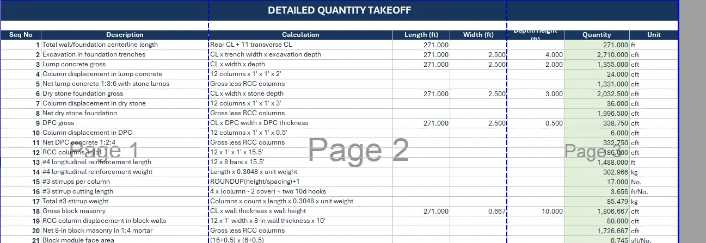
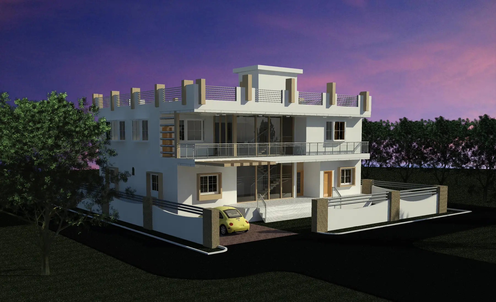
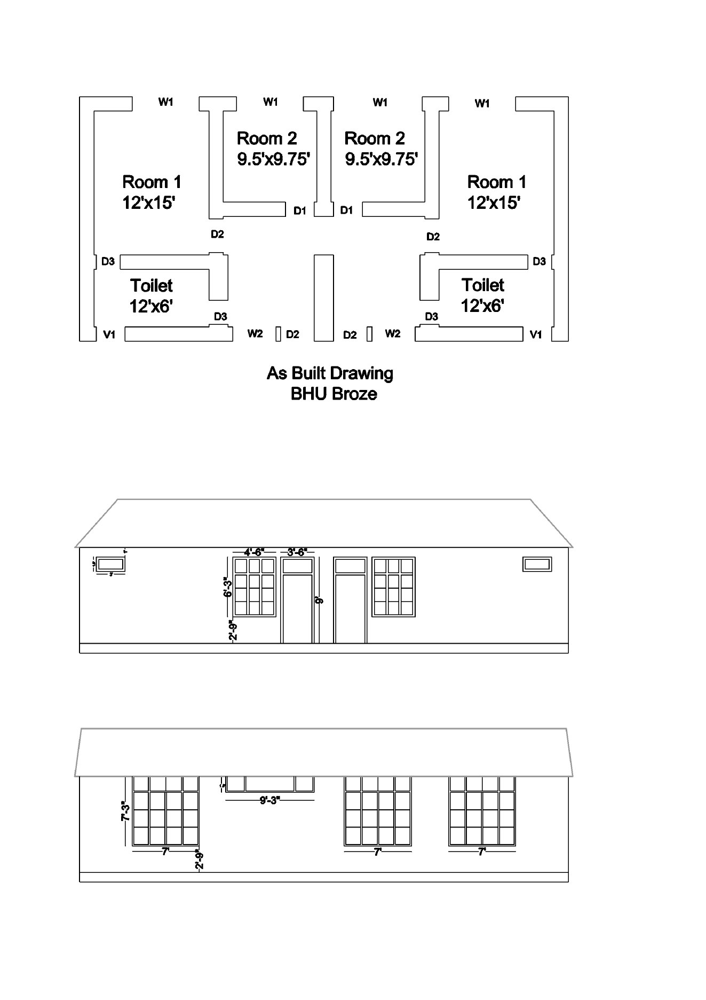
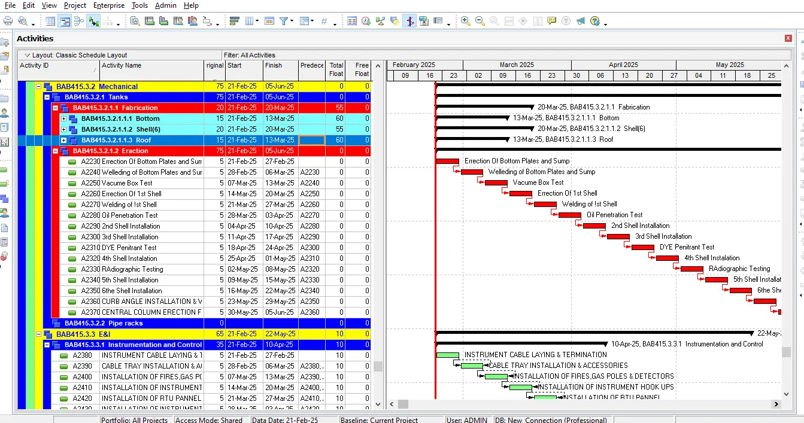
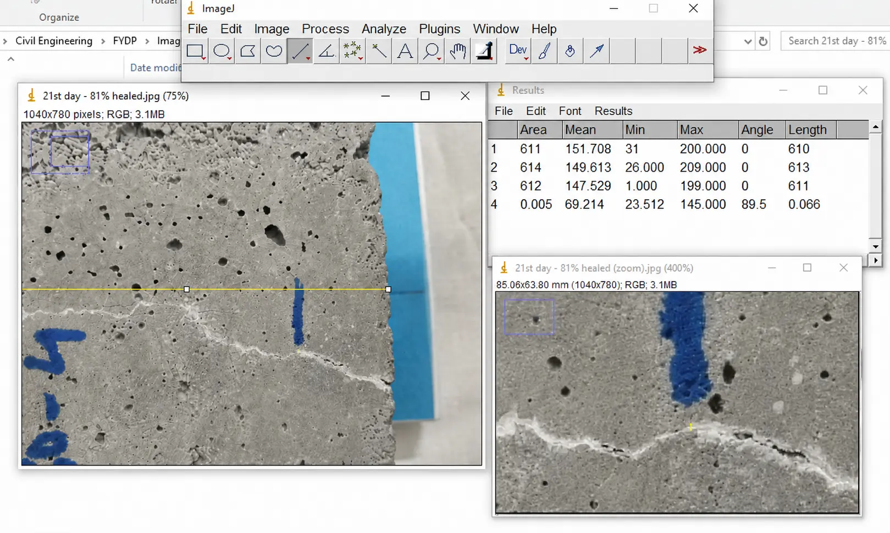
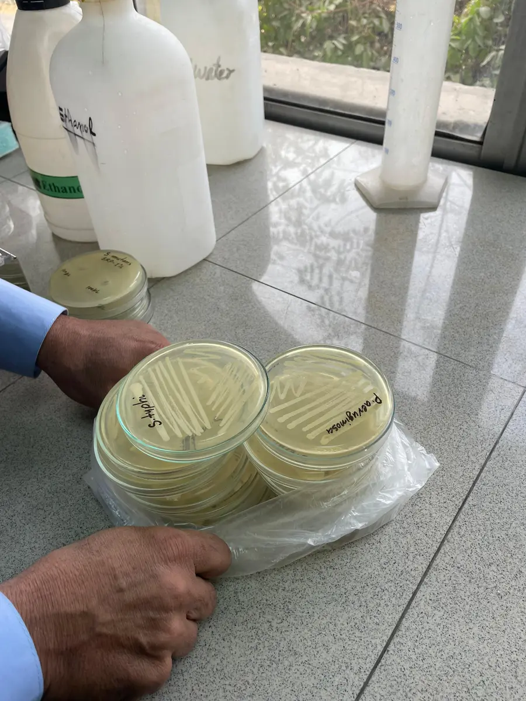

Engineering Skills
Technical skills organized by discipline
Each area opens a dedicated page containing the relevant drawings, schedules, models, worksheets, calculations, software, and project context currently available.

Quantity Surveying
Quantity Surveying & Cost Estimation
Quantity takeoff, BOQ preparation, material analysis, cost estimation workflow, rate analysis, contractor billing, work-done verification, and site assessment.

BIM
BIM & Revit
Residential models, spatial development, exterior and interior views, dimensioned room layouts, and drawings generated from BIM work.

CAD
AutoCAD
2D drafting, measured plans, elevations, room labels, dimensions, building layouts, and coordinated drawing sheets.

Planning
Project Planning & Primavera P6
Work breakdown structures, activities, relationships, sequencing, baselines, Gantt charts, CPM, float, progress monitoring, and schedule updating.

Software & Analysis
Civil Engineering Software & Analysis
Software used across calculation, structural analysis, geospatial mapping, BIM, scheduling, research, and technical documentation.

Research Case Study
EverCrete Final Year Design Project
Self-healing bacterial mortar, controlled experimentation, crack monitoring, compressive-strength testing, ImageJ analysis, and preliminary XGBoost modeling.
Accuracy Note
Only documented work is published
Software names and project claims are included only where the CV, thesis, certificate, screenshot, drawing, or supplied information supports them.
Need a concise overview?
The CV summarizes education, experience, technical skills, and certifications.